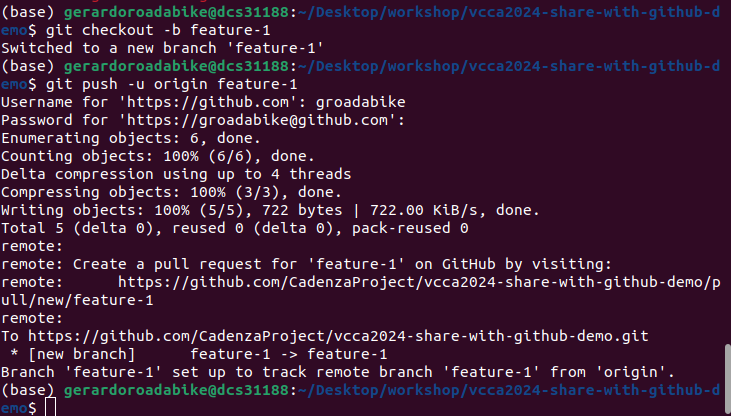
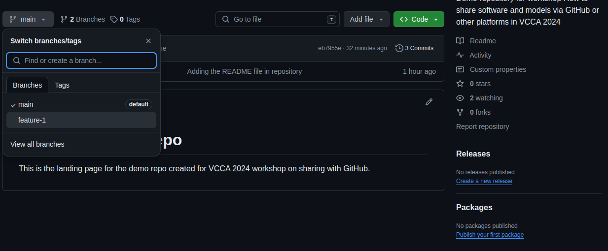
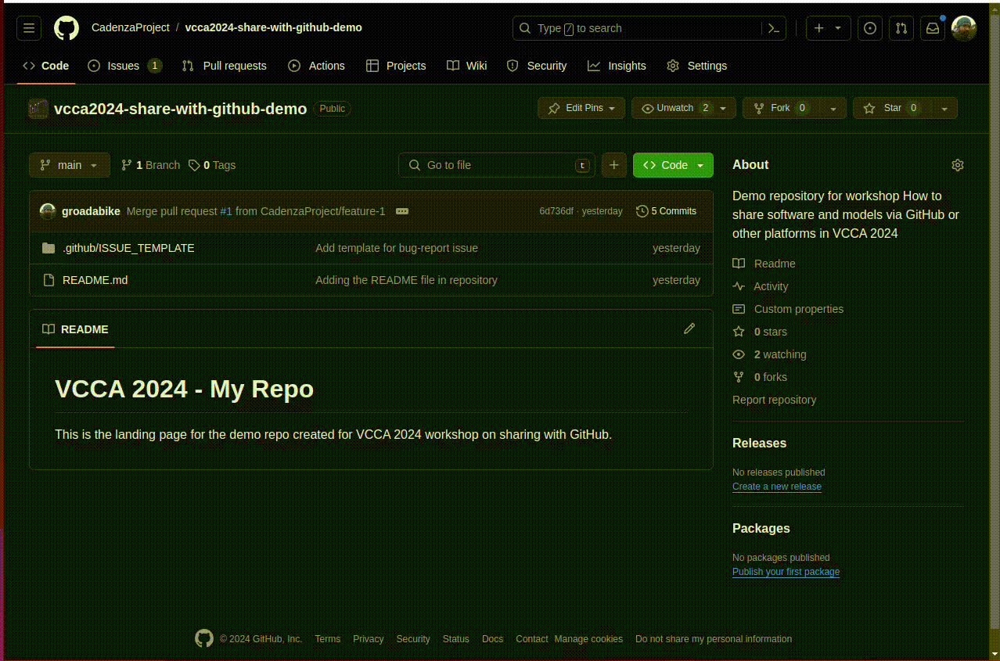
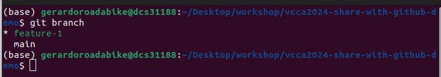

8. Branching the code#
As we just saw, after protecting our main branch, we can’t push directly to it.
We need to create a new branch and then create a pull request to merge it into main.
Wether you are working on a forked repository or a repository where you have write access, it is a good practice to create a new branch for each new feature or bug fix.
Here, we will create a new branch called feature-1 and push some changes to it.
The recommended procedure to work on a new feature or bug fix is as follows:
On the GitHub page, create an
ISSUEwith much information as you can provide.

8.1. Create a new branch#
There are several ways to create a new branch in GitHub.
Using the Git command line
Using the GitHub web interface
Directly from an issue.
8.1.1. Using the Git command line#
Clone the repository to your local machine (if you haven’t already).
git clone https://github.com/username/<repo name>git
cd <repo name>
Create a new branch using the
git checkout -b <branch-name>command. It is important to give the branch a descriptive name that indicates the purpose of the branch.
git checkout -b feature-1
This command creates a new branch called feature-1 and switches to it.
Push the new branch to the remote repository.
git push -u origin feature-1
The -u flag sets the remote branch as the upstream branch for the local branch,
so in the future, you can simply use git push without specifying the branch.

Verify that the new branch has been created on GitHub by visiting the repository page, clicking on the “Branch” dropdown, and selecting the new branch.

git switch
The git checkout command is used to switch branches in Git.
However, starting from Git version 2.23, a new command git switch was introduced to switch branches.
So, you can also use git switch <branch-name> to switch branches.
For creating a new branch, you can use git switch -c <branch-name> instead of git checkout -b <branch-name>.
The git switch command is more intuitive and user-friendly than git checkout.
For our use case, you won’t see any difference between the two commands.
8.1.2. Using the GitHub web interface#
Navigate to the repository on GitHub.
Open the “Branch” dropdown and type the name of the new branch in the text box. You will see an option to create a new branch from the current branch. Click the button to create the branch.

8.1.3. Directly from an issue#
If you have created an issue on GitHub, you can create a new branch directly from the issue page. On the issue page, at the left sidebar, you will see a button to create a new branch.
8.2. Making changes to the new branch#
Now that we have created a new branch, we can make changes to the codebase
without affecting the main branch. Before, we need to be sure that we are
working on the correct branch. To check the current branch, use the git branch command.
git branch
The output will show the current branch with an asterisk (*) next to it and a list
of all branches in the repository.

To switch to a different branch, use the git checkout <branch-name> command
or git switch <branch-name> if you are using Git version 2.23 or later.
git switch feature-1
Now, you can make changes to the codebase, commit them, and push them to the remote repository.
Let’s try again to create the issue template and push it to the feature-1 branch.
Create the issue template as described in the previous section.
Add and commit the changes to your repository.
Push the changes to the remote repository.
8.3. What if more than one person is working on the same branch?#
When working in a team, it is common to have multiple people working on the same branch. In this case, it is essential to keep the branch up-to-date with the changes made by other team members.
To update your local branch with the changes from the remote repository, you have two options:
Fetch the changes from the remote repository and merge them into your local branch.
Pull the changes from the remote repository into your local branch.
The git fetch command downloads the changes from the remote repository but does not apply them to your local branch.
You can then use the git merge command to merge the changes into your local branch.
git fetch origin
git merge origin/feature-1
The git pull command is a combination of git fetch and git merge.
It downloads the changes from the remote repository and merges them into your local
branch in one step.
git pull origin feature-1
When working in a team, it is essential to communicate with other team members to avoid conflicts and ensure that everyone is aware of the changes being made to the codebase.
8.4. What if there are conflicts?#
When multiple people are working on the same branch, conflicts can occur if two or more people make changes to the same file or the same lines of code.
If a conflict occurs, Git will notify you when you try to merge or pull changes from the remote repository. You will need to resolve the conflict manually by editing the file to resolve the conflicting changes.
After resolving the conflict, you need to add the file to the staging area and commit the changes.
8.5. What if I want to work on more than one feature at a time?#
If you want to work on multiple features or bug fixes simultaneously, you can create a new branch for each feature or bug fix. This way, you can keep the changes for each feature separate and avoid conflicts between them.
When working on multiple branches, you can switch between branches using the
git checkout or git switch command.